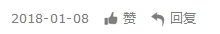

妈妈，我是Gay
专访・补梦人的狂想摇滚・2017-09-07
———————断背山———————
有些人似乎注定就要做一些突出常人思考的事情。他们在混乱的时代里顺从自己的心意，寻找真爱，在真爱中叹息无奈，在不尽的无奈中独自醒来……他们想要过一种只属于自己的生活。
而很多时候，这些人仍在黑暗中摸索，他们渴望找到自己灵魂的出口，渴望不被别人视为异类，渴望随时随地都能向爱人示爱。也许，这一天真正到来了，他们就可以呼吸自由的空气； 如果无法到来，他们就会被压抑、窒息、死亡。
—————— 我自己的爱达荷 ——————
对于喜欢看Gay片，看美男的影迷来说，这部片子应该再熟悉不过了吧！影片的主角麦克（瑞凡·菲尼克斯饰）和斯考特（基努·里维斯饰）同为沦落街头的男妓，虽然他俩处于同样的处境， 但各自的家庭背景却相差悬殊。麦克是无名弃儿，而斯考特却贵为波特兰市长的逆子。
（我自己的爱达荷 | 导演：格斯·范·桑特）
麦克患有一种嗜睡症，常常在半梦半醒的状态回忆起童年某些模糊的生活片段。爱达荷的诗意田园也时常进入他的梦里，以及让他魂牵梦萦的母亲。麦克深爱着陪他一起出来寻找失散多年的 母亲的斯考特，而斯考特用沉默拒绝了麦克的示爱。两人的情感渐行渐远，最终成了熟悉的陌生人。
（我自己的爱达荷 | 导演：格斯·范·桑特）
多年后，饰演斯考特的基努·里维斯成为美国片酬最高的男星，而凭借此片展示了出色演技的瑞凡·菲尼克斯却早早的离奇去世，成为继詹姆斯·迪恩之后，最有潜力的早逝天才演员。此片 的导演格斯·范·桑特将自身的身份认同与文化观念置于电影之中外，他本人也是少数群体中的一员。
——————— 干柴烈火 ———————
法国近年冒出来的新锐导演众多，弗朗索瓦·欧容便是其中之一。电影好不好看，就像蛋糕好不好吃一样，有人取决於它的材料是否丰富、珍贵，做工是否精细；有的人只在意口感是否滑顺、 能否兼顾营养。欧容的电影在取材上绝对是丰富多样的，做工也很精细，至于口感嘛，尝过的人才能略知一二。
（干柴烈火 | 导演：弗朗索瓦·欧容）
《干柴烈火》的背景设置在上世纪70年代的德国。富商欧帕在酒吧里认识了19岁的少年弗兰兹，并把他带回了家。两人在一个屋檐下生活了一段时间，本为异性恋的弗兰兹渐渐对欧帕产生 了强烈的依赖。为了讨好欧帕，弗兰兹会耐着性子为欧帕做任何事。日子久了，总会擦出一些不和谐的火花，弗兰兹像是诗意的化身，他固执的以为爱情的保质期是永久的。
（干柴烈火 | 导演：弗朗索瓦·欧容）
直到有一天欧帕的前男友登门拜访，而那时的前男友已经变性为一位漂亮的女性，甚至连欧帕都无法在第一时间认出她来。无巧不成书，弗兰兹的女朋友恰好也在此时出现， 并想带弗兰兹离开。四个人在同一个空间里相遇，两对旧情人，一对新情人。而更巧妙的是，在短暂的相遇里，弗兰兹的女朋友安娜对欧帕产生了好感，并将弗兰兹遗弃，在安娜与欧帕寻欢作乐之时，弗兰兹服毒自杀了。
——————— 疯狂夜 ———————
纵观整个电影史，同性恋题材的电影并不鲜见，而当下同性恋电影相比其它题材的电影对青年文化的影响颇为深厚。这一代年轻人对禁忌，情欲，身体，自我认知总抱有很多好奇，在无法借助其它 方式来宣泄或是学习的时候，电影便是最好的途径。
（疯狂夜 | 导演：西里尔·科拉尔）
《疯狂夜》是一部自传性影片，导演西里尔·科拉尔将自己的小说搬上大荧幕。年轻英俊的电视台摄影师让得知自己罹患了艾滋病，他一边接受治疗，同时又无节制的放肆纵乐。有一天他在拍摄中认 识了一位17岁的广告模特罗娜，他深深的被她的气质所吸引。而那一刻罗娜也喜欢上了让。
让是一个双性恋，但他的同性伴侣多过异性伴侣。让，告诉罗娜其实自己也喜欢男孩。为了留住让，罗娜接受了一个既喜欢男人又喜欢女人的恋人。但是让没有将自己罹患艾滋病的实情告诉罗娜。在爱 情里罗娜是自私的，她不想任何人与他分享让，而让并不属于任何一个爱他的人。他将自己的新男友带回了家，这让罗娜忍无可忍，三人之间爆发了激烈的争吵。时日不多的让开始变得清醒了，他离开 了罗娜与男友，在海边看着夕阳，直到生命已走向尽头时他才发现原来生命是如此的美好。
（疯狂夜 | 导演：西里尔·科拉尔）
1993年3月5日，科拉尔死于艾滋病。三天后，法国电影恺撒奖评委会将最佳影片等4项大奖授予了《疯狂夜》，这部类似自传的电影成了他最后的辉煌。值得一提的是，科拉尔堪称是全才，导演，表演， 写作，摄影以及作曲。这部电影原声中的多首曲子都出自他手，甚至开嗓演唱了片尾曲。
三部同性恋电影，三位同性恋导演。我似乎怀疑，是不是只有真正的Gay导才能拍出好看的Gay片。关锦鹏曾在一段采访里说到，同性恋其实不该是一种性取向，而是一种爱。“同性”是名词做定语用的， “恋”才是这三个字的中心词。也许，如果到了一个真正平等、博爱的社会，“同性恋”这个词语，都应该消失掉。男人、女人并不重要，重要的是，我们有爱。爱才是支撑一切的动力。


文章作者 |

|
版权声明 |
|

|
补梦人的狂想摇滚 情癡 情呆 行怪 言狂 冥頑 |
「落网」专栏内文章，未经作者及「落网」许 可，不得转载、摘编。一经发现，自行承担全 部法律责任。 谢谢合作。 |
|
评论 ·215
最新评论
狐狸君，没音乐的话我早就自杀了吧？
We are all simple guys, love is love.
